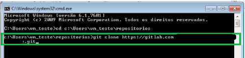
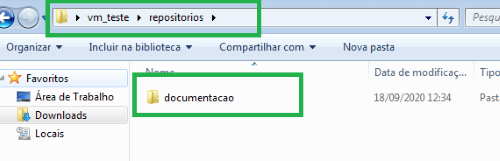
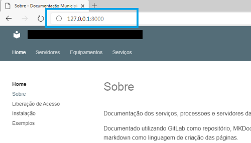
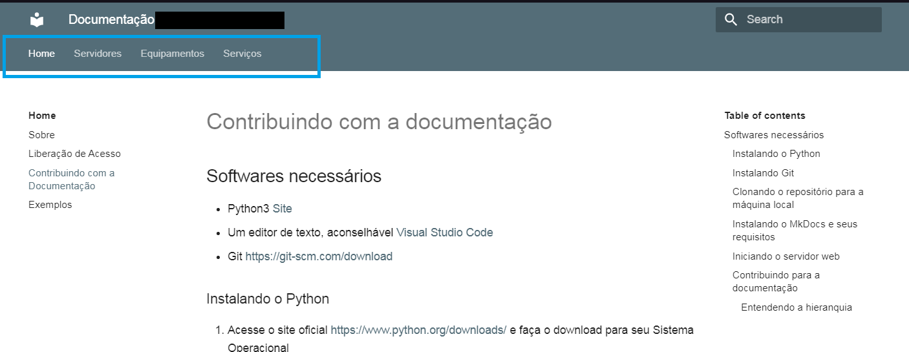
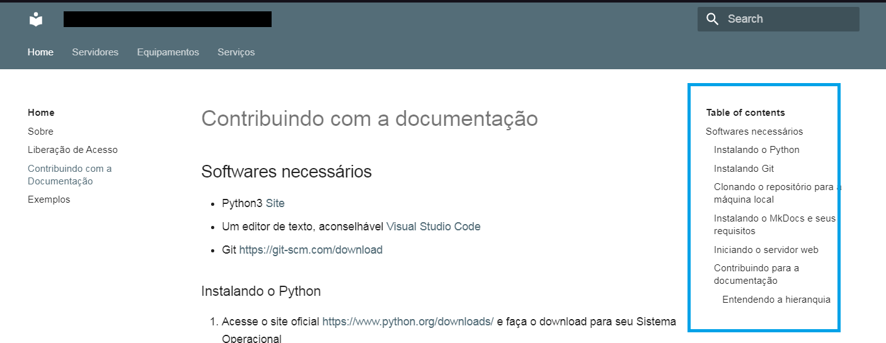

Contribuindo com a documentação
Softwares necessários
- Python3 Site
- Um editor de texto, aconselhável Visual Studio Code
- Git https://git-scm.com/download
Instalando o Python
- Acesse o site oficial https://www.python.org/downloads/ e faça o download para seu Sistema Operacional
- Na tela de instalação marque a opção Add Python 3.X to PATH
- Clique em Install Now
Instalando Git
- Faça o download no site oficial https://git-scm.com/download
- A instalação padrão ( somente dando next ) já nos atende
Clonando o repositório para a máquina local
- Acesse sua conta do GitLab
- Clique no repositório que deseja clonar, ex.:Suporte Amparo/documentação
- Clique no icone azul Clone
-
Copie o link da parte Clone With HTTPS

-
Crie uma pasta para armazenar seus repositórios. ex.: c:\user\usuario\repositorios
Dica
A questão de criar um diretório chamado repositório na raiz do usuário é para facilitar no caso de ter mais dem um repositório e você querer que eles fiquem no mesmo local para facilitar a localização
-
Abra CMD e navegue até a pasta onde irá fazer o clone do repositório, ex.:
cd c:\Users\vm_teste\repositorios -
Usaremos o git clone para fazer o clone do repositório para a máquina local
git clone <link_do_repositorio>Ex.:git clone https://gitlab.com/suporte_amparo/documentacao.git
-
Será solicitado seu usuário e senha do GitLab

- Após finalizar o processo do git clone será criada uma pasta com o nome do repositório

Instalando o MkDocs e seus requisitos
O MkDocs é um conjunto de ferramentas para desenvolver a documentação usando Markdown, ele gera o código HMTL dado o conteúdo do arquivo de markdown e tem um servidor Web embarcado para que você possa testar as alterações em sua máquina antes de subir para o repositório as alterações que você realizou
- Via CMD acesse a pasta do repositório, ex.:
cd c:\Users\vm_teste\repositorios\documentacao -
Digite o comando
pip install -r requirements.txtEntendo o comando acima
pip vem na instalação do Python, ele é como um gerenciador de pacotes do linux
Dentro de requirements.txt tem os pacotes que são necessários para o MkDocks, assim como algumas extensões para adicionar novas funcionalidades para o Makdown
Iniciando o servidor web
Para poder visualizar no navegador o site gerado pelo markdown é necessário iniciar o servidor do mkdocs
- Via CMD acesse a pasta do repositório, ex.:
cd c:\Users\vm_teste\repositorios\documentacao - Inicie o servidor web com o comando
mkdocs serve

- Acesse o link
http://127.0.0.1:8000no navegador para visualizar a página

Entendendo da estrutura e contribuindo
Entendendo a Hierarquia
A criação dos menus de navegação são criada pelo mkdoks.yml
Trecho do arquivo:
1# Árvore de Páginas
2nav:
3 - Home:
4 - Sobre: index.md
5 - Liberação de Acesso: acesso.md
6 - Contribuindo com a Documentação: instalacao.md
7 - Exemplos: exemplos.md
8 - Servidores:
9 - Sobre: servidores/servidores.md
10 - E-Sus: servidores/esus/esus.md
11 - Laboratório: servidores/laboratorio/laboratorio.md
12 - Equipamentos:
13 - Sobre: equipamentos/equipamentos.md
14 - Mikrotik: equipamentos/mikrotik.md
15 - Serviços:
16 - G-Suit: servicos/gsuit.md
O primeiro nível (Home, Servidores, Equipamentos, Serviços) são os menus do Header da página

Já o que está no segundo nível, como por exemplo de Home (Sobre, Liberação de Acesso, Contribuindo com a Documentação, Exemplos) ficam localizados no menu a esquerda
E a direita fica o menu de navegação do arquivo .mk em questão, por exemplo, se você acessar Home > Contribuindo com a Documentação, o menu a direita será os links para navegar nesta documentação
